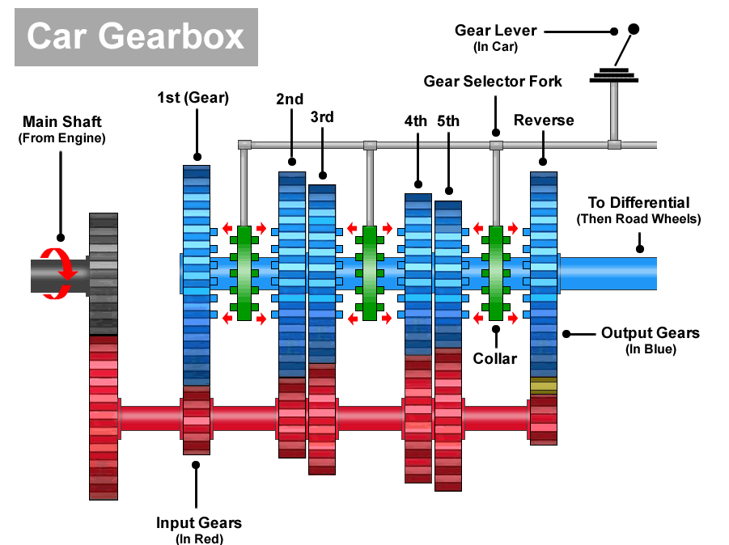

What are gears and what do they do?
The gears are very important for speed and a smooth car performance. They are located with you in the front of the car. Without the gears, the car would only be able to move at the top speed of the engine and moving the car from a standstill would be more difficult.
The different gears
The gears normally range from 1 to 5 and are different for automatic than from manual. Gear 1 has the smallest input gear size compared to the output gear creating the biggest ratio, this is great for a boost of power and getting off from a standstill but after that isn't good for actual speed while driving. Gear 5 is the opposite as the input gear is bigger than the output gear. In this gear, the gear sacrifices torque for speed as the car already has momentum, the gears in between all hold different ratios of input gear size to output gear size for different effects.
